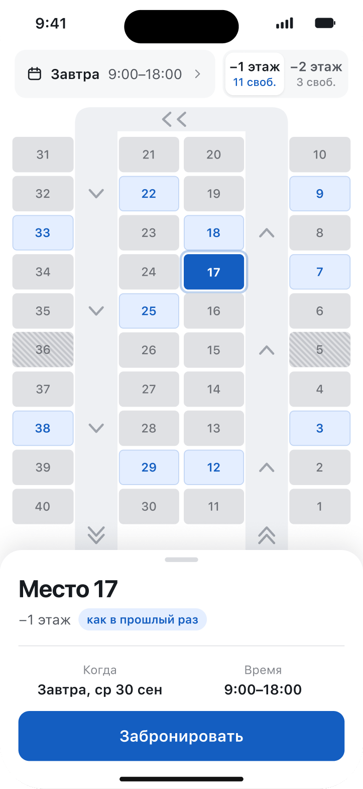
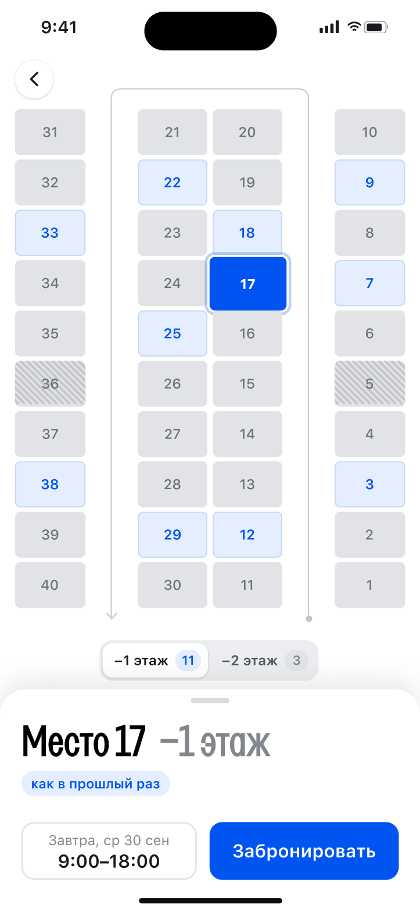
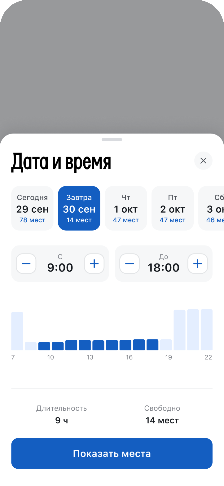
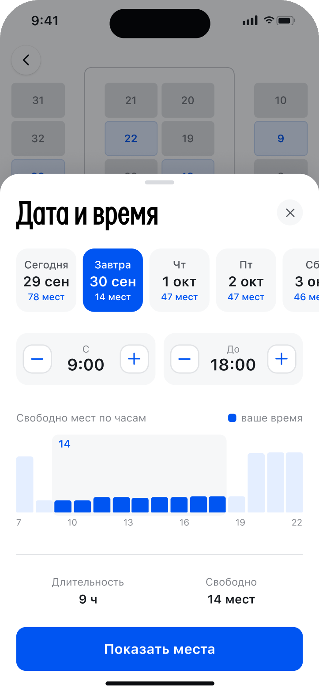
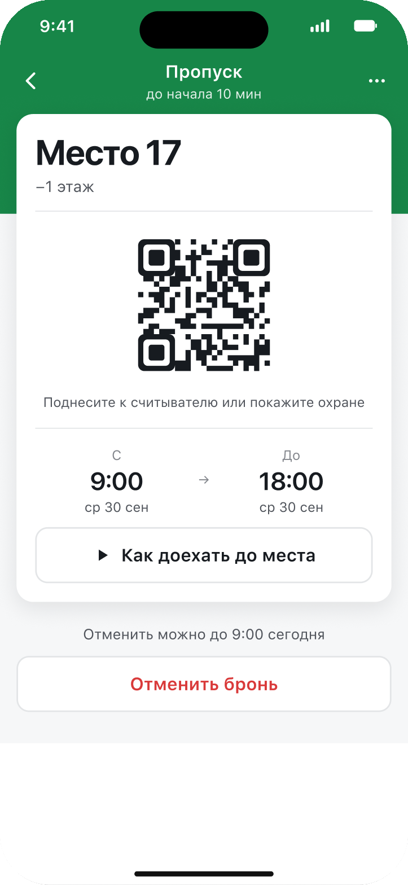
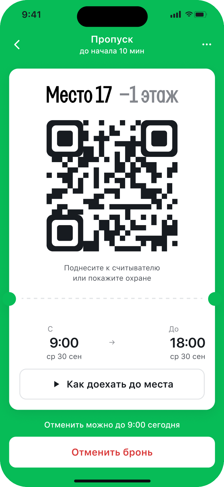

Бронь места на парковке бизнес-центра: от того, кто и когда бронирует, до интерфейса, который одинаково понятен любому сотруднику
Около 25 минут чтения. Главное — в «01. Коротко», это 2 минуты.
Сначала ресерч: кто бронирует, что на чертеже, как похожие задачи решают другие продукты. Потом решения — по карте и по интерфейсу, допущения и что проверить на людях. Все экраны и состояния живьём — в прототипе, компоненты — в Figma. Аналоги и разбор чертежа собирал с ИИ, отбор и решения — мои.
Сотрудник ездит в офис несколько раз в неделю и бронирует место заранее — вечером или утром перед поездкой. Модуль парковки — один экран: план этажа, на котором место уже подобрано. После брони тот же план ведёт к своему месту, а пропуск для въезда открывается одним тапом.
Ниже — короткие ответы на вопросы из задания. Подробнее — в разделе 07, живьём — в прототипе.
| Вопрос из задания | Ответ |
|---|---|
| Как сделать бронь быстрой и понятной | Два тапа: открыть и нажать «Забронировать». Место из прошлого раза уже выбрано на завтра на привычное время. С главной приложения ещё быстрее: карточка парковки показывает это же место и бронирует его в один тап. |
| Как показать много мест на маленьком экране | Этаж повёрнут и выпрямлен в сетку 4 × 10: все 40 мест видны сразу, без увеличения. Этажи переключаются внизу, направление движения показывает тонкая линия по проездам. Найти место в гараже помогает «Как доехать» — вид из-за руля. |
| Что нужно знать до подтверждения | Номер места и этаж, дата и время. Всё это в шторке прямо у кнопки. Метка объясняет, почему подобрано именно это место: «как в прошлый раз» или «ближе к выходу». |
| Как отличить занятое, недоступное и выбранное место | Свободное — голубое, выбранное — синее с обводкой, занятое — серое, закрытое — серое со штриховкой. Тап по серому месту объясняет, что с ним: «Занято на это время — можно взять с 13:30» или «Место закрыто до 5 окт». |
| Как восстановить сценарий после конфликта или ошибки | Место заняли — бронь не создаётся, соседнее свободное место предлагается одной кнопкой. Мест нет — ближайшее время или день одним тапом и «Уведомить». Связь пропала после нажатия — сначала проверяем, создалась ли бронь, и только потом предлагаем повторить. Места не загрузились — «Повторить», дата и время сохраняются. |
| Нужен ли автоподбор | Да, но без навязывания: место подобрано сразу, а план — чтобы его поменять. Если прошлое место занято, говорим прямо: «ваше место 17 занято — это ближайшее». |
Сотрудник ездит в офис несколько раз в неделю и бронирует место заранее — вечером или утром перед поездкой. С приложением он встречается в двух разных ситуациях.
Спокойно, телефон в руке. Нужно понять, есть ли место на нужное время, и занять его. Главный страх — приехать и не найти, где встать.
Торопится, под землёй нет связи. Нужно показать пропуск у ворот и найти своё место среди восьмидесяти одинаковых на двух этажах.
Этаж — одно кольцо с движением в одну сторону. Этажей два, на каждом 40 мест. Лифта, выхода в здание и пандуса на второй этаж на чертеже нет — это допущения, раздел 08.
Смотрел не парковочные приложения вообще, а продукты, где решают те же подзадачи: выбрать место из плотной сетки, понять загрузку заранее, пережить конфликт, найти место на месте. Из каждого взял один приём — в правой колонке написано, где он у нас.
| Где | Приём | У нас |
|---|---|---|
| Parkalot, офисная парковка | Дни недели лентой, под каждым днём — сколько мест свободно. Место выбирают на объёмном плане этажа, снизу карточка «Space 79 · Available · Reserve». | 7 дней одной лентой с числом свободных мест. Карточка места с кнопкой брони — шторкой поверх плана, без отдельного экрана. |
| Wayleadr, офисная парковка | Выбора нет совсем: система сама распределяет места между теми, кто приедет, по истории посещений. | Середина: место предложено сразу — прошлое или ближе к выходу, — но его можно поменять на плане. Задание требует выбор на карте, а людям с любимым местом он и правда нужен. |
| Google Карты, загруженность по часам | Столбики по часам показывают, когда место обычно забито, ещё до поездки. | Столбики «сколько мест свободно» по часам выбранного дня. Видно, что днём почти всё занято, а утром и вечером свободно. Выбранное время подсвечено. |
| Кинотеатры: BookMyShow, District | Чужие выбранные места гаснут у всех в реальном времени. Своё держат 7–10 минут, пока идёт оплата. | Статусы на плане обновляются вживую. Держать место не нужно: подтверждение в один тап без оплаты, окно для конфликта — секунды. Но экран конфликта всё равно есть. |
| Купон ставки | Если коэффициент изменился, пока ставка отправлялась, купон не подменяет его молча: показывает новое значение и просит подтвердить. Выгодные изменения можно разрешить принимать заранее. | «Место 17 только что заняли»: бронь не создана, рядом — ближайшее свободное место и одна кнопка «Забронировать 18». Молча на другое место не переносим. |
| OpenTable, рестораны | Когда подходящего столика нет, предлагает ближайшее время и «Notify me» — сообщить, когда освободится. Офисные парковки так же ведут лист ожидания. | «Мест нет» — не тупик: ближайшее время в тот же день или ближайший день, где места есть, одним тапом, и «Уведомить», когда место освободится. |
| Apple Wallet, посадочный | Жёсткая иерархия полей: главное крупно — откуда и куда, в шапке — то, что видно в стопке карт, мелко — выход, группа, место. | На пропуске крупно место и этаж — это ищешь глазами в гараже. Ниже QR, время и «Как доехать до места». |
| Google Карты, превью маршрута | Маршрут можно просмотреть поворот за поворотом ещё до выезда (Immersive View for routes). | «Как доехать до места»: вид из-за руля с подсвеченным местом и шаги пути от ворот. Это вариант Г в разделе 06. |
| Паркли, городская парковка | Время выбирается на одном экране, срок отмены написан над кнопкой отмены, после поездки — «Повторить бронирование». Иерархию билета проверяли на водителях. | Срок отмены — над кнопкой отмены на пропуске. «Повторить» — не после поездки, а на входе: в карточке на главной бронь на завтра в один тап, а в самом модуле прошлое место уже подобрано. |
Источники: parkalot.io, wayleadr.com, Google о загруженности и превью маршрута, разбор выбора мест BookMyShow и District, справка Barstool и theScore Bet, OpenTable, Apple HIG · Wallet, Паркли. Где пригодных картинок нет, нарисованы схемы.
Семь выводов, которые определяют экраны.
Главный вопрос задания — как показать много мест на маленьком экране. Рассмотрел пять вариантов и выбрал Г.
С картой человек встречается дважды, и задачи у этих встреч разные. Дома ему нужен обзор, чтобы выбрать место, в гараже — путь, чтобы его найти. Поэтому у каждой задачи свой взгляд.
С бронью модуль открывается тем же планом. Своё место зелёное, остальные приглушены: выбирать больше нечего, бронь может быть одна. Шторка внизу становится карточкой брони: место, время, пропуск, отмена.
Схемы нарисованы до выбора цветов, поэтому цвета в них условные: зелёная рамка — свободно, серое — занято на выбранное время, штриховка — закрыто, синее — выбрано. В интерфейсе свободное место голубое, а зелёный оставлен для своего.
Как устроен интерфейс и почему он такой. Всё, о чём здесь написано, работает в прототипе. Справа от телефона — панель, где можно открыть главную приложения, включить сбой или «нет мест», сменить способ въезда и перемотать время к началу брони.
Парковкой пользуются сотрудники всех компаний в здании, а это очень разные люди. За одной дверью — креативная студия, которая оценит смелую подачу. За соседней — геодезическое бюро: инженеры весь день работают в своих программах и чужие интерфейсы не разглядывают. Непривычная навигация или «дизайнерская» кнопка их только тормозит.
Поэтому интерфейс нарочно спокойный: приёмы, знакомые по картам и банковским приложениям, шторка снизу, простые слова. Два цвета со смыслом: синий — выбрать и нажать, зелёный — то, что уже твоё. Характер — только в заголовках. Приложение должно одинаково легко заходить и тем, и другим.
Как именно проезжают шлагбаум, задание не говорит. На чертеже у ворот будка охраны, поэтому основной вариант — QR: его подносят к считывателю или показывают охраннику. Но парковки оснащены по-разному, а от этого меняется весь путь у ворот. Поэтому нарисовал ещё два варианта.
Меняется только блок въезда, остальной экран один и тот же. В прототипе способ переключается в панели, в разделе «Въезд в брони».
#0055F2 — выбор и действия, зелёный #07BC57 — «твоё»: своё место на плане, кнопка «Пропуск» и сам пропуск. Всё остальное — нейтральные серые. Оба цвета чистые и яркие, без тяжёлой «корпоративности».Первый черновик интерфейса я собрал в коде вместе с ИИ — так быстрее проверить логику на живом прототипе. Потом довёл интерфейс руками в Figma. Ниже три экрана, где разница заметнее всего. Черновик и промежуточные поиски остались в Figma на странице «Архив · черновик и поиски».

Черновик
Финал
Черновик
Финал
Черновик
ФиналЧего нет в задании и что я принял, чтобы двигаться дальше. Каждое допущение меняет конкретный экран.
| Допущение | Что меняет |
|---|---|
| Въезд — по QR с экрана пропуска | На пропуске блок въезда с QR для охраны или считывателя. Два других варианта отличаются только этим блоком: номер машины, который узнаёт камера, и кнопка «Открыть шлагбаум». |
| Въезд — за 15 минут до начала, брони одного места не встык | К брони на 9:00 приезжают без десяти девять — это обычное утро, а не исключение. Если пускать строго с 9:00, каждое утро кто-то ждёт у шлагбаума. Если пускать раньше, но разрешить брони встык, человек приедет на место, которое до 9:00 ещё чьё-то. Поэтому между бронями одного места те же 15 минут. Цена: если утренняя бронь заканчивается в 10:00, следующая на это место — с 10:30, потому что шаг 30 минут. Подсказка на плане так и пишет: «можно взять с 10:30». |
| Пропуск хранится в телефоне | QR сохраняется в момент брони и открывается по часам телефона — под землёй связь не нужна. «Открыть шлагбаум» без связи не сработает, поэтому основной вариант — QR. |
| На экране пропуска яркость на максимум | Считыватель должен прочитать QR с первого раза, даже если экран у человека приглушён. Так делают посадочные и билеты в Wallet. |
| Парковка для сотрудников бесплатная | Нет цены и оплаты, подтверждение — в один тап. Держать место на время оплаты не нужно. |
| Выход в здание — у ворот | От этого зависит, какое место «ближе к выходу» при подборе. |
| Бронь — внутри одного дня, с 7:00 до 22:00, шаг 30 минут | Время «с — до» в пределах дня, минимум час — по заданию. |
| Второй этаж устроен так же, как первый | Один план на оба этажа. На −2 этаж въезжают через те же ворота и спускаются по пандусу — это есть в шагах «Как доехать». |
| Активная бронь — будущая или та, что идёт сейчас | Пока она есть, модуль открывается планом с зелёным местом и карточкой брони. Тап по другому месту напоминает, что бронь может быть одна. |
| Все места одинаковые | У мест нет особенностей вроде «широкое» или «с зарядкой для электромобиля». Поэтому на плане и в брони только номер и этаж, а выбирают место по тому, где оно стоит. |
| Закрытое место закрыто на известный срок | Поэтому подсказка называет дату: «Место закрыто до 5 окт». |
| Место обозначается номером и этажом: «Место 17, −1 этаж» | Номер крупно на плане, в брони и на пропуске, этаж — рядом серым. Номера идут по ходу движения, от ворот. |
| Место не держится на время подтверждения | Поэтому экран «Место заняли» обязателен. |
Самые рискованные места решения — и как понять, что они работают.
| Что проверяем | Как | Признак, что работает |
|---|---|---|
| Различают ли «занято», «закрыто» и «выбрано» | 5 человек, задание на плане: «займи свободное место ближе к въезду». | 4 из 5 выбирают свободное место с первого раза и своими словами объясняют разницу. |
| Понятен ли экран «Место заняли» | 5 человек, в сценарии подстроен конфликт перед подтверждением. | Никто не думает, что бронь создана. Большинство берёт предложенное соседнее место. |
| Читается ли загрузка по столбикам | 5 человек в шторке даты и времени: «выбери время, когда место точно будет». | 4 из 5 выбирают часы, где места есть, без объяснений. Если нет — подписываю число над каждым столбиком. |
| Берут ли подобранное место | После запуска: доля броней, где предложенное место не меняли. | Если место чаще меняют, чем берут, подбор выбирает не то — пересматриваю правило. |
| Находят ли место по плану без «Как доехать» | 5 человек: показать план с зелёным местом, потом пройти от ворот до места — на макете или на настоящей парковке. | 4 из 5 доходят до места без «Как доехать». Если нет — выношу кнопку заметнее, прямо в карточку брони. |
| Как быстро достают пропуск у ворот | Задание с телефоном в руке: «ты у ворот, покажи пропуск охране». | Меньше 5 секунд от открытия приложения до QR, никто не ищет пропуск в меню. Если дольше — открываю пропуск сразу, когда въезд уже открыт. |
| Не простаивают ли места из-за броней «на всякий случай» | Парковка бесплатная, поэтому люди бронируют с запасом и потом не приезжают. Место весь день пустое, а коллега в это время не нашёл, где встать. После запуска считаю, сколько броней закончились без въезда. | Таких броней мало. Если много — место освобождается само, когда человек не въехал в первый час брони: так делают офисные парковки. |
| Освобождают ли место, когда уезжают раньше | После запуска: сколько идущих броней освободили раньше конца и сколько из этих мест потом взяли коллеги. | Кнопкой пользуются, и освобождённые места находят новых хозяев. Если нет — напоминание на выезде: «Уезжаете? Освободите место для коллег». |